7. [TD]：使用 JDBC API 实现 TD 的 [DAO] 层
关键词：关系型数据库、JDBC API、SQLException。
让我们重新审视应用程序的分层架构：
 |
选举所需的数据存储在 MySQL 数据库 [dbelections] 中
7.1. 支持
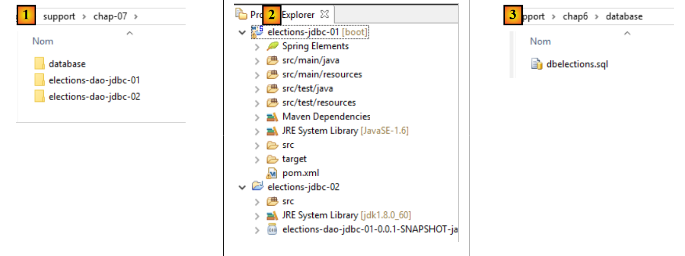 |
[support / chap-07] 文件夹 [1] 包含：
- 本章的 Eclipse 项目 [2]；
- 用于创建 MySQL 数据库 [dbelections] 的 SQL 脚本 [3]；
7.2. [ dbelections] 数据库
任务：按照第 6.4.2 节所述的步骤创建 MySQL 数据库 [dbelections]。
[dbelections] 数据库是一个包含两个表的 MySQL 数据库：
 |
[conf] 表包含选举配置信息：
 |
- [id]: 自动递增的主键；
- [version]: 记录版本号——此处可忽略；
- [sap]: 待填补的席位数；
- [votingThreshold]：低于该阈值时，该名单将被淘汰；
其内容如下：
 |
[listes] 表包含本次选举的候选人名单：
 |
- [id]：自动递增的主键；
- [version]：记录版本号——此处可忽略；
- [name]: 列表名称；
- [votes]: 该列表的票数——仅在用户于 [presentation] 层输入后才确定；
- [seats]: 赢得的席位数——仅在 [business] 层计算后才确定；
- [eliminated]: 若名单被淘汰则为 1，否则为 0——仅在 [业务] 层计算完成后才确定；
[listes] 表的内容如下：
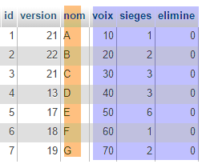 |
用于生成 [dbelections] 数据库的 SQL 脚本名为 [dbelections.sql]，位于服务器上。其代码如下：
-- phpMyAdmin SQL Dump
-- version 4.0.4
-- http://www.phpmyadmin.net
--
-- Customer: localhost
-- Generated on: Wed March 11, 2015 at 12:20 pm
-- Server version: 5.6.12-log
-- Version of PHP: 5.4.12
SET SQL_MODE = "NO_AUTO_VALUE_ON_ZERO";
SET time_zone = "+00:00";
/*!40101 SET @OLD_CHARACTER_SET_CLIENT=@@CHARACTER_SET_CLIENT */;
/*!40101 SET @OLD_CHARACTER_SET_RESULTS=@@CHARACTER_SET_RESULTS */;
/*!40101 SET @OLD_COLLATION_CONNECTION=@@COLLATION_CONNECTION */;
/*!40101 SET NAMES utf8 */;
--
-- Database: `dbelections`
--
CREATE DATABASE IF NOT EXISTS `dbelections` DEFAULT CHARACTER SET utf8 COLLATE utf8_swedish_ci;
USE `dbelections`;
-- --------------------------------------------------------
--
-- Structure of the `conf` table
--
CREATE TABLE IF NOT EXISTS `conf` (
`id` bigint(11) NOT NULL AUTO_INCREMENT,
`version` int(11) NOT NULL DEFAULT '1',
`sap` tinyint(4) NOT NULL,
`seuilelectoral` double NOT NULL,
PRIMARY KEY (`id`)
) ENGINE=InnoDB DEFAULT CHARSET=utf8 COLLATE=utf8_swedish_ci AUTO_INCREMENT=2 ;
--
-- Contents of the `conf` table
--
INSERT INTO `conf` (`id`, `version`, `sap`, `seuilelectoral`) VALUES
(1, 1, 6, 0.05);
-- --------------------------------------------------------
--
-- Structure of the `lists` table
--
CREATE TABLE IF NOT EXISTS `listes` (
`id` bigint(11) NOT NULL AUTO_INCREMENT,
`version` int(11) NOT NULL DEFAULT '1',
`nom` varchar(20) COLLATE utf8_swedish_ci NOT NULL,
`voix` int(11) NOT NULL,
`sieges` int(11) NOT NULL,
`elimine` tinyint(1) NOT NULL DEFAULT '0',
PRIMARY KEY (`id`),
UNIQUE KEY `nom` (`nom`)
) ENGINE=InnoDB DEFAULT CHARSET=utf8 COLLATE=utf8_swedish_ci AUTO_INCREMENT=8 ;
--
-- Contents of the `lists` table
--
INSERT INTO `listes` (`id`, `version`, `nom`, `voix`, `sieges`, `elimine`) VALUES
(1, 21, 'A', 10, 1, 0),
(2, 22, 'B', 20, 2, 0),
(3, 21, 'C', 30, 3, 0),
(4, 13, 'D', 40, 3, 0),
(5, 17, 'E', 50, 6, 0),
(6, 18, 'F', 60, 1, 0),
(7, 19, 'G', 70, 2, 0);
/*!40101 SET CHARACTER_SET_CLIENT=@OLD_CHARACTER_SET_CLIENT */;
/*!40101 SET CHARACTER_SET_RESULTS=@OLD_CHARACTER_SET_RESULTS */;
/*!40101 SET COLLATION_CONNECTION=@OLD_COLLATION_CONNECTION */;
7.3. Eclipse 项目
 |
针对 [DAO] 层的 Eclipse 项目将如下所示：
 |
- [elections.dao.entities] 包包含由 [DAO] 层操作的对象；
- [elections.dao.service] 包包含 [DAO] 层的实现；
- [elections.dao.config] 包包含 [DAO] 层的配置
- [elections.dao.junit] 包包含该项目的 JUnit 测试类；
- [elections.dao.console] 包包含一个可执行的测试类；
7.4. Maven 项目配置
 |
配置 Maven 项目的 [pom.xml] 文件如下：
<project xmlns="http://maven.apache.org/POM/4.0.0" xmlns:xsi="http://www.w3.org/2001/XMLSchema-instance"
xsi:schemaLocation="http://maven.apache.org/POM/4.0.0 http://maven.apache.org/xsd/maven-4.0.0.xsd">
<modelVersion>4.0.0</modelVersion>
<groupId>istia.st.elections</groupId>
<artifactId>elections-dao-jdbc-01</artifactId>
<version>0.0.1-SNAPSHOT</version>
<parent>
<groupId>org.springframework.boot</groupId>
<artifactId>spring-boot-starter-parent</artifactId>
<version>1.2.7.RELEASE</version>
</parent>
<properties>
<project.build.sourceEncoding>UTF-8</project.build.sourceEncoding>
<java.version>1.8</java.version>
</properties>
<dependencies>
<!-- MySQL -->
<dependency>
<groupId>mysql</groupId>
<artifactId>mysql-connector-java</artifactId>
</dependency>
<!-- Spring -->
<dependency>
<groupId>org.springframework</groupId>
<artifactId>spring-context</artifactId>
</dependency>
<!-- Tomcat Jdbc -->
<dependency>
<groupId>org.apache.tomcat</groupId>
<artifactId>tomcat-jdbc</artifactId>
</dependency>
<!-- library jSON -->
<dependency>
<groupId>com.fasterxml.jackson.core</groupId>
<artifactId>jackson-databind</artifactId>
</dependency>
<!-- Spring Boot -->
<dependency>
<groupId>org.springframework.boot</groupId>
<artifactId>spring-boot</artifactId>
<scope>test</scope>
</dependency>
<!-- Spring Boot Test -->
<dependency>
<groupId>org.springframework.boot</groupId>
<artifactId>spring-boot-starter-test</artifactId>
<scope>test</scope>
</dependency>
<!-- Spring Boot Logging -->
<dependency>
<groupId>org.springframework.boot</groupId>
<artifactId>spring-boot-starter-logging</artifactId>
</dependency>
</dependencies>
<!-- plugins -->
<build>
<plugins>
<plugin>
<artifactId>maven-assembly-plugin</artifactId>
<configuration>
<archive>
<manifest>
<mainClass>config.AppConfig</mainClass>
</manifest>
</archive>
<descriptorRefs>
<descriptorRef>jar-with-dependencies</descriptorRef>
</descriptorRefs>
</configuration>
</plugin>
<!-- to install the project artifact in the local Maven repository -->
<plugin>
<groupId>org.apache.maven.plugins</groupId>
<artifactId>maven-surefire-plugin</artifactId>
<version>2.18.1</version>
</plugin>
</plugins>
</build>
</project>
该文件与第6.5.1节中描述的文件类似。已进行以下修改：
- 第 8–12 行：定义了一个父 Maven 项目。第 10 行中的 [spring-boot-starter-parent] 项目定义了大量依赖项及其版本。在使用其中一项（第 19–57 行）时，无需指定版本，因为该版本已在父 Maven 项目中定义；
- 第 40–51 行：项目测试类所需的依赖项。这些依赖项带有 [<scope>test</scope>] 属性，表示它们仅适用于 [src/test/java] 文件夹中的类。这些依赖项不会包含在最终的项目归档中；
- 第 53–56 行：Spring 将使用 [spring-boot-starter-logging] 库向控制台记录日志；
- 第 14–17 行：Maven 配置属性：
- 第 15 行：指定源文件采用 UTF-8 编码；
- 第 16 行：指定编译器版本必须为 1.8；
7.5. [DAO] 层中的实体
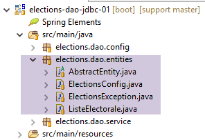 |
- [ElectionsConfig] 是与 [CONF] 表中某一行关联的对象模型；
- [VoterList] 是与 [LISTS] 表中某一行关联的对象模型；
- [AbstactEntity] 是前两个类的父类。它封装了这两个类共有的 [id, version] 字段；
- [ElectionsException] 是一个异常类；
7.5.1. [ElectionsException] 类
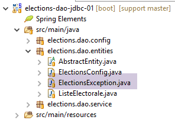 |
第4.3节中介绍了[ElectionsException]类。以下是该类的代码：
package ...;
import java.io.Serializable;
import java.util.ArrayList;
import java.util.List;
// exception class for the Elections application
// the exception is uncontrolled
public class ElectionsException extends RuntimeException implements Serializable {
// serial ID
private static final long serialVersionUID = 1L;
// local fields
private int code;
private List<String> erreurs;
// manufacturers
public ElectionsException() {
super();
}
public ElectionsException(int code, Throwable e) {
// parent
super(e);
// local
this.code = code;
this.erreurs = getErreursForException(e);
}
public ElectionsException(int code, String message, Throwable e) {
// parent
super(message,e);
// local
this.code = code;
this.erreurs = getErreursForException(e);
}
public ElectionsException(int code, String message) {
// parent
super(message);
// local
this.code = code;
List<String> erreurs = new ArrayList<>();
erreurs.add(message);
this.erreurs = erreurs;
}
public ElectionsException(int code, List<String> erreurs) {
// parent
super();
// local
this.code = code;
this.erreurs = erreurs;
}
// list of exception error messages
private List<String> getErreursForException(Throwable th) {
// retrieve the list of exception error messages
Throwable cause = th;
List<String> erreurs = new ArrayList<>();
while (cause != null) {
// the message is retrieved only if it is !=null and not blank
String message = cause.getMessage();
if (message != null) {
message = message.trim();
if (message.length() != 0) {
erreurs.add(message);
}
}
// next cause
cause = cause.getCause();
}
return erreurs;
}
// getters and setters
...
}
一个 [ElectionsException] 对象包含两项信息：
- 第 16 行：一个错误代码；
- 第 17 行：与发生的异常的堆栈跟踪相关的错误消息列表；
- 该类有 5 个构造函数（第 20、24、32、40、50 行）；
- 第 59–76 行：[getErrorsForException] 方法从异常堆栈中检索错误消息；
7.5.2. [AbstractEntity] 类
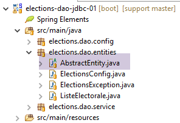 |
[AbstractEntity] 类如下所示：
package elections.dao.entities;
import java.io.Serializable;
import com.fasterxml.jackson.core.JsonProcessingException;
import com.fasterxml.jackson.databind.ObjectMapper;
public abstract class AbstractEntity implements Serializable {
private static final long serialVersionUID = 1L;
// fields
protected Long id;
protected Long version;
// manufacturers
public AbstractEntity() {
}
public AbstractEntity(Long id, Long version) {
this.id = id;
this.version = version;
}
// signature
public String toString() {
try {
return new ObjectMapper().writeValueAsString(this);
} catch (JsonProcessingException e) {
e.printStackTrace();
return null;
}
}
// getters and setters
...
}
它将 [CONF] 和 [LISTS] 表中行记录的 [ID, NAME] 字段存储其中（第 8–9 行）。
- 第 8 行：该类具有 [Abstract] 属性，表示它不能被实例化。它只能被派生；
- 第 26–33 行：对象的 JSON 签名；
- 第 28 行：返回 [this] 的 JSON 字符串。若在运行时，[this] 表示一个从 [AbstractEntity] 派生的对象，则获取该派生对象的 JSON 字符串。因此，派生类无需定义 [toString] 方法，父类的 [toString] 方法即可满足需求；
7.5.3. [ElectionsConfig] 类
 |
[ElectionsConfig] 类如下所示：
package elections.dao.entities;
public class ElectionsConfig extends AbstractEntity {
private static final long serialVersionUID = 1L;
// fields
private int nbSiegesAPourvoir;
private double seuilElectoral;
// manufacturers
public ElectionsConfig() {
}
public ElectionsConfig(Long id, Long version, int nbSiegesAPourvoir, double seuilElectoral) {
// parent
super(id, version);
// local fields
this.nbSiegesAPourvoir = nbSiegesAPourvoir;
this.seuilElectoral = seuilElectoral;
}
// getters and setters
...
}
- 第 4 行：该类继承自 [AbstractEntity] 类；
- 第 8-9 行：存储来自 [CONF] 表中 [SAP, SEUILELECTORAL] 列的信息；
7.5.4. [VoterList] 类
 |
[VoterList] 类如下所示：
package elections.dao.entities;
public class ListeElectorale extends AbstractEntity {
// fields
private String nom;
private int voix;
private int sieges;
private boolean elimine;
// manufacturers
public ListeElectorale() {
}
public ListeElectorale(String nom, int voix, int sieges, boolean elimine) {
// parent
super();
// local fields
initNom(nom);
initVoix(voix);
initSieges(sieges);
this.elimine=elimine;
}
public ListeElectorale(Long id, Long version, String nom, int voix, int sieges, boolean elimine) {
// parent
super(id, version);
// local fields
initNom(nom);
initVoix(voix);
initSieges(sieges);
this.elimine=elimine;
}
// private methods
private void initNom(String nom) {
this.nom = nom.trim();
if ("".equals(nom)) {
throw new ElectionsException(10, "Le nom ne peut être vide");
}
}
private void initVoix(int voix) {
this.voix = voix;
if (voix < 0) {
throw new ElectionsException(11, "Le nombre de voix ne peut être <0");
}
}
private void initSieges(int sieges) {
this.sieges = sieges;
if (sieges < 0) {
throw new ElectionsException(12, "Le nombre de sièges ne peut être <0");
}
}
// getters and setters
public String getNom() {
return nom;
}
public void setNom(String nom) {
initNom(nom);
}
public int getVoix() {
return voix;
}
public void setVoix(int voix) {
initVoix(voix);
}
public int getSieges() {
return sieges;
}
public void setSieges(int sieges) {
initSieges(sieges);
}
public boolean isElimine() {
return elimine;
}
public void setElimine(boolean elimine) {
this.elimine = elimine;
}
}
- 第 3 行：该类继承自 [AbstractEntity] 类；
- 第 6–9 行：该类存储来自 [LISTS] 表的 [NAME, VOTES, SEATS, ELIMINATED] 列；
7.6. [DAO]层的Spring配置
 |
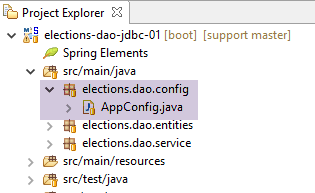 |
[AppConfig] 类是一个 Spring 配置类，用于配置数据库访问，具体如下：
package elections.dao.config;
import org.apache.tomcat.jdbc.pool.DataSource;
import org.springframework.cache.CacheManager;
import org.springframework.cache.annotation.EnableCaching;
import org.springframework.cache.concurrent.ConcurrentMapCacheManager;
import org.springframework.context.annotation.Bean;
import org.springframework.context.annotation.ComponentScan;
import org.springframework.context.annotation.Configuration;
@ComponentScan(basePackages = { "elections.dao.service" })
@EnableCaching
public class AppConfig {
// constants
public final static String URL = "jdbc:mysql://localhost:3306/dbelections";
public final static String USER = "root";
public final static String PASSWD = "";
public final static String DRIVER_CLASSNAME = "com.mysql.jdbc.Driver";
public final static String SELECT_LISTES = "SELECT ID, VERSION, NOM, VOIX, SIEGES, ELIMINE FROM LISTES";
public final static String SELECT_CONF = "SELECT ID, VERSION, SAP, SEUILELECTORAL, SAP FROM CONF";
public final static String UPDATE_LISTES = "UPDATE LISTES SET VOIX=?, SIEGES=?, ELIMINE=? WHERE ID=?";
@Bean
public DataSource dataSource() {
// data source TomcatJdbc
DataSource dataSource = new DataSource();
// configuration access JDBC
dataSource.setDriverClassName(DRIVER_CLASSNAME);
dataSource.setUsername(USER);
dataSource.setPassword(PASSWD);
dataSource.setUrl(URL);
// an initially open connection
dataSource.setInitialSize(1);
// result
return dataSource;
}
@Bean
public CacheManager cacheManager() {
return new ConcurrentMapCacheManager("electionsConfig");
}
}
- 第 25–38 行：将通过数据源 [tomcat-jdbc] 访问数据库。第 6.5 节中已使用并解释了此类数据源；
- 第 17–23 行：一组静态常量，项目中的所有类均可访问；
- 第 13 行：[@Configuration] 注解将 [AppConfig] 类定义为 Spring 配置类；
- 第 11 行：[@ComponentScan] 注解指定了 Spring 对象所在的包。在此，我们将在 [dao] 包中定义一个 Spring 对象。[@ComponentScan] 注解使该类成为配置类，从而省去了添加 [@Configuration] 注解的步骤；
- 第 12 行启用了缓存管理。其原理如下：
- 我们在方法 M 上应用 [@Cacheable('cache_name')] 注解。'cache_name' 是第 41 行中使用的名称；
- 当方法 M 被首次调用时，其结果会被返回，并同时存储在注解指定的缓存中；
- 后续调用方法 M 时，若参数与首次调用相同，则不执行该方法，Spring 直接返回缓存中的值；
7.7. 日志配置
 |
日志库由 [pom.xml] 中的以下依赖项定义：
<!-- Spring Boot Logging -->
<dependency>
<groupId>org.springframework.boot</groupId>
<artifactId>spring-boot-starter-logging</artifactId>
</dependency>
此依赖项包含以下库：
 |
[logback] 库负责日志记录。它通过两个文件进行配置：
- [logback.xml] 用于主代码分支；
- [logback-test.xml] 用于代码的测试分支。如果该文件缺失，则改用前一个文件；
这两个文件必须位于项目的 [Classpath] 中。因此，它们被放置在以下文件夹中：
- [src/main/resources] 用于主代码分支；
- [src/test/resources] 用于代码的测试分支；
这两个文件的内容在此处相同：
<configuration>
<appender name="STDOUT" class="ch.qos.logback.core.ConsoleAppender">
<!-- encoders are by default assigned the type
ch.qos.logback.classic.encoder.PatternLayoutEncoder -->
<encoder>
<pattern>%d{HH:mm:ss.SSS} [%thread] %-5level %logger{36} - %msg%n</pattern>
</encoder>
</appender>
<!-- log level control -->
<root level="info"> <!-- info, debug, warn -->
<appender-ref ref="STDOUT" />
</root>
</configuration>
一切都在第 12 行发生，我们在那里设置了所需的日志级别：
- [debug]：最详细的级别；
- [off]：不记录日志；
- [info]：常规日志级别；
- [warn]：与 [info] 相同，但额外包含警告消息。这些消息提示可能出现的错误；
一旦执行过程中出现错误，请立即切换至 [debug] 模式。
7.8. [DAO] 层的实现
 |
 |
[DAO] 层的 [IDao] 接口如下：
package istia.st.elections.webapi.client.dao;
import istia.st.elections.webapi.client.entities.ElectionsConfig;
import istia.st.elections.webapi.client.entities.ListeElectorale;
public interface IDao {
// election configuration
public ElectionsConfig getElectionsConfig();
// competing lists
public ListeElectorale[] getListesElectorales();
// save election results
public void setListesElectorales(ListeElectorale[] listesElectorales);
}
实现基于数据库的 [dao] 层的 [ElectionsDaoJdbc] 类的骨架如下：
package elections.dao.service;
import java.sql.Connection;
import java.sql.PreparedStatement;
import java.sql.ResultSet;
import java.sql.SQLException;
import org.apache.tomcat.jdbc.pool.DataSource;
import org.springframework.beans.factory.annotation.Autowired;
import org.springframework.cache.annotation.Cacheable;
import org.springframework.stereotype.Component;
import elections.dao.entities.ElectionsConfig;
import elections.dao.entities.ElectionsException;
import elections.dao.entities.ListeElectorale;
@Component
@SuppressWarnings("unused")
public class ElectionDaoJdbc implements IElectionsDao {
@Autowired
private DataSource dataSource;
@Cacheable("electionsConfig")
// obtaining conf of the election
public ElectionsConfig getElectionsConfig() {
throw new RuntimeException("[getElectionsConfig] not yet implemented");
}
// obtaining lists
public ListeElectorale[] getListesElectorales() {
throw new RuntimeException("[getListesElectorales] not yet implemented");
}
// list modification [votes, seats, eliminated]
public void setListesElectorales(ListeElectorale[] listesElectorales) {
throw new RuntimeException("[setListesElectorales] not yet implemented");
}
// -------------------- private methods
// end-of-life management
private ElectionsException doFinally(int code, ResultSet rs, PreparedStatement ps, Connection connexion) {
// closure ResultSet
if (rs != null) {
try {
rs.close();
} catch (SQLException e1) {
}
}
// closure [PreparedStatement]
if (ps != null) {
try {
ps.close();
} catch (SQLException e2) {
}
}
// close connection
if (connexion != null) {
try {
connexion.close();
} catch (SQLException e3) {
// returns a [ElectionsException]
return new ElectionsException(code, e3);
}
}
// no exceptions
return null;
}
// wrestling management
private ElectionsException doCatchException(int code1, int code2, Connection connexion, Throwable th) {
// we generate a [ElectionsException]
ElectionsException ex1 = new ElectionsException(code1, th);
// cancel transaction
try {
if (connexion != null) {
connexion.rollback();
}
} catch (SQLException e2) {
}
// we return the exception
return ex1;
}
}
- 第 24 行：[@Cacheable] 注解是 Spring 注解，用于指示系统缓存 [getElectionsConfig] 方法的结果。此处能够应用该注解，是因为 [CONF] 表的内容永远不会改变。而 [getListesElectorales] 方法则无法应用此注解，因为 [LISTES] 表的内容会随时间变化；
- [doCatchException] 和 [doFinally] 方法返回 [ElectionsException] 类型。如果资源在释放过程中未发生错误，[doFinally] 方法将返回一个空指针；
任务：参考第 6.5.2 节中学习的 [IntroJdbc02] 类，编写 [ElectionDaoJdbc] 类。
7.9. [Main] 测试类
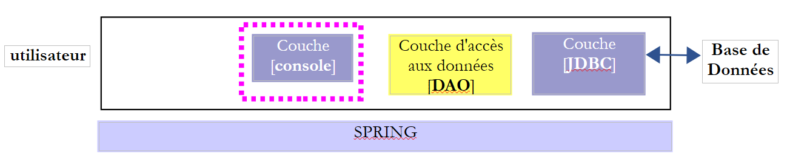 |
 |
[Main] 类的定义如下：
package elections.dao.console;
import java.util.ArrayList;
import java.util.List;
import org.springframework.context.annotation.AnnotationConfigApplicationContext;
import elections.dao.config.AppConfig;
import elections.dao.entities.ElectionsConfig;
import elections.dao.entities.ElectionsException;
import elections.dao.entities.ListeElectorale;
import elections.dao.service.IElectionsDao;
public class Main {
// data source
private static IElectionsDao dao;
public static void main(String[] args) {
// retrieve the [DAO] layer reference after instantiating the Spring context
try (AnnotationConfigApplicationContext ctx = new AnnotationConfigApplicationContext(AppConfig.class)) {
// data source recovery
dao = ctx.getBean(IElectionsDao.class);
} catch (Exception e) {
System.out.println("Les erreurs suivantes se sont produites lors de l'initialisation du contexte Spring -------");
for (String erreur : getErreursForThrowable(e)) {
System.out.println(erreur);
}
// end
return;
}
// reading the BD
ElectionsConfig electionsConfig = null;
ListeElectorale[] listes;
try {
// contents of both tables
electionsConfig = dao.getElectionsConfig();
listes = dao.getListesElectorales();
} catch (ElectionsException e) {
System.out.println("Les erreurs suivantes se sont produites lors de la lecture des tables ----------");
for (String erreur : e.getErreurs()) {
System.out.println(erreur);
}
// end
return;
}
// all went well - display
System.out.println(String.format("Nombre de sièges à pourvoir : %d", electionsConfig.getNbSiegesAPourvoir()));
System.out.println(String.format("Seuil électoral : %5.2f", electionsConfig.getSeuilElectoral()));
System.out.println("Listes candidates----------------");
for (ListeElectorale liste : listes) {
System.out.println(liste);
}
}
// private methods ------------------
private static List<String> getErreursForThrowable(Throwable th) {
// retrieve the list of exception error messages
Throwable cause = th;
List<String> erreurs = new ArrayList<>();
while (cause != null) {
// the message is retrieved only if it is !=null and not blank
String message = cause.getMessage();
if (message != null) {
message = message.trim();
if (message.length() != 0) {
erreurs.add(message);
}
}
// next cause
cause = cause.getCause();
}
return erreurs;
}
}
- 第 21–31 行：获取 [DAO] 层的引用；
- 第 21 行：我们使用了一种名为 try_with_resources 的语法。其语法如下：
try (T ressource=expression) {
// exploitation de ressource
...
}
- （续）
- 第 1 行中的类型 T 必须实现 [java.lang.AutoCloseable] 接口；
- 当退出第 1–4 行代码块时，无论是否发生异常，[java.lang.AutoCloseable] 类型的资源都会被自动释放。熟悉 C# 语言的读者会发现，这在语法和功能上与 using 子句（T resource = expression）相对应；
- 第 40–49 行：使用 [DAO] 层检索 [CONF] 和 [LISTES] 表的内容；
- 第 41–47 行：测试 [electionsconfig] 缓存。该缓存已在两处定义：
- 在 [ElectionsDaoJdbc] 类中：
@Cacheable("electionsConfig")
public ElectionsConfig getElectionsConfig() {
- （续）
- 在 [AppConfig] 配置类中：
@EnableCaching
public class AppConfig {
...
@Bean
public CacheManager cacheManager() {
return new ConcurrentMapCacheManager("electionsConfig");
}
}
- 第 59 行：关闭 Spring 上下文；
- 第 62–67 行：显示检索到的信息；
通过实现的 [DAO] 层获得的结果如下：
- 第 2–4 行：展示缓存的影响：
- 请求 1 耗时 80 毫秒；
- 查询 2 耗时 1 毫秒；
当数据库处于离线状态时，得到以下结果：
7.10. 针对 [ ElectionsDaoJdbc] 类的 JUnit 测试
 |
 |
[Test01] 类是以下 [JUnit] 测试类：
package elections.dao.junit;
import org.junit.Assert;
import org.junit.Before;
import org.junit.Test;
import org.junit.runner.RunWith;
import org.springframework.beans.factory.annotation.Autowired;
import org.springframework.boot.test.SpringApplicationConfiguration;
import org.springframework.test.context.junit4.SpringJUnit4ClassRunner;
import elections.dao.config.AppConfig;
import elections.dao.entities.ElectionsConfig;
import elections.dao.entities.ListeElectorale;
import elections.dao.service.IElectionsDao;
@SpringApplicationConfiguration(classes = AppConfig.class)
@RunWith(SpringJUnit4ClassRunner.class)
public class Test01 {
// layer [DAO]
@Autowired
private IElectionsDao electionsDao;
@Before
public void init() {
// the table is cleaned [LISTES]
// competing lists
ListeElectorale[] listes = electionsDao.getListesElectorales();
// set votes and seats to 0 and eliminate false
int voix = 0;
int sièges = 0;
boolean elimine = false;
for (ListeElectorale liste : listes) {
liste.setVoix(voix);
liste.setSieges(sièges);
liste.setElimine(elimine);
}
// we make this data persistent using the [dao] layer
electionsDao.setListesElectorales(listes);
}
@Test
public void testElections01() {
...
}
}
- 第 17 行：[RunWith] 注解（第 6 行）是 [JUnit] 注解，它通过 [SpringJUnit4ClassRunner] 类确保与 Spring 的集成；
- 第 16 行：[SpringApplicationConfiguration] 注解是 [Spring] 注解（第 8 行），允许您为 JUnit 测试指定配置类。此处，我们指定了用于配置项目的 [AppConfig] 类。 随后，我们即可访问该配置类定义的所有 Spring 对象。正因如此，我们才能在第 21–22 行注入待测试的 [DAO] 层的引用；
- 第 25 行：[Before] 注解表示该方法必须在每次测试之前执行；
- 第 26–41 行：[init] 方法将 [LISTES] 表中的 votes 和 seats 字段清零，并将 [elimine] 布尔值设为 [false]；
唯一的测试方法如下：
@Test
public void testElections01() {
System.out.println("testElections01-------------------------------------");
// election configuration recovery
ElectionsConfig electionsConfig = electionsDao.getElectionsConfig();
int nbSiegesAPourvoir = electionsConfig.getNbSiegesAPourvoir();
double seuilElectoral = electionsConfig.getSeuilElectoral();
Assert.assertEquals(6, nbSiegesAPourvoir);
Assert.assertEquals(0.05, seuilElectoral, 1E-6);
// competing lists
ListeElectorale[] listes = electionsDao.getListesElectorales();
// display read values
System.out.println("Nombre de sièges à pourvoir : " + nbSiegesAPourvoir);
System.out.println("Seuil électoral : " + seuilElectoral);
System.out.println("Listes en compétition ---------------------");
for (int i = 0; i < listes.length; i++) {
System.out.println(listes[i]);
}
// votes and seats are allocated to lists
int voix = 0;
int sièges = 0;
boolean elimine = false;
for (ListeElectorale liste : listes) {
liste.setVoix(voix);
liste.setSieges(sièges);
liste.setElimine(elimine);
voix += 10;
sièges += 1;
elimine = !elimine;
}
// we make this data persistent using the [dao] layer
electionsDao.setListesElectorales(listes);
// data re-reading
ListeElectorale[] listesElectorales2 = electionsDao.getListesElectorales();
// check data read
Assert.assertEquals(7, listesElectorales2.length);
voix = 0;
sièges = 0;
elimine = false;
for (ListeElectorale liste : listesElectorales2) {
Assert.assertEquals(voix, liste.getVoix());
Assert.assertEquals(sièges, liste.getSieges());
Assert.assertEquals(elimine, liste.isElimine());
voix += 10;
sièges += 1;
elimine = !elimine;
}
System.out.println("Listes en compétition ---------------------");
for (int i = 0; i < listes.length; i++) {
System.out.println(listes[i]);
}
}
- 第 5–9 行：我们确保能够检索 [CONF] 表中的内容；
- 第 11–19 行：我们显示 [LISTES] 表的内容。此处没有测试，仅进行目视检查；
- 第21–35行：通过为列表的字段[voices, seats, eliminated]赋值，修改数据库中的[LISTES]表；
- 第37–51行：我们再次读取[LISTES]表，并验证结果是否与输入内容一致；
- 第 52–55 行：进行目视验证；
通过已实现的 [DAO] 层获得的控制台结果如下：
- 第1-23行：Spring测试日志；
- 第25-26行：[CONF]表的内容；
- 第27-34行：[LISTES]表的初始内容；
- 第35-42行：为[voix, sieges, elimine]字段赋值后的[LISTES]表内容；
此外，JUnit 测试通过：
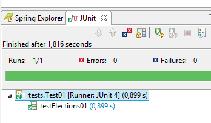 |
7.11. 为 [dao] 层创建 [with-dependencies] 归档
最终项目的架构如下：
 |
让我们回顾一下该项目的 Maven 配置：
<project xmlns="http://maven.apache.org/POM/4.0.0" xmlns:xsi="http://www.w3.org/2001/XMLSchema-instance"
xsi:schemaLocation="http://maven.apache.org/POM/4.0.0 http://maven.apache.org/xsd/maven-4.0.0.xsd">
<modelVersion>4.0.0</modelVersion>
<groupId>istia.st.elections</groupId>
<artifactId>elections-dao-jdbc-01</artifactId>
<version>0.0.1-SNAPSHOT</version>
<parent>
<groupId>org.springframework.boot</groupId>
<artifactId>spring-boot-starter-parent</artifactId>
<version>1.2.7.RELEASE</version>
</parent>
<dependencies>
<!-- MySQL -->
<dependency>
<groupId>mysql</groupId>
<artifactId>mysql-connector-java</artifactId>
</dependency>
<!-- Spring -->
<dependency>
<groupId>org.springframework</groupId>
<artifactId>spring-context</artifactId>
</dependency>
<!-- Tomcat Jdbc -->
<dependency>
<groupId>org.apache.tomcat</groupId>
<artifactId>tomcat-jdbc</artifactId>
</dependency>
<!-- library jSON -->
<dependency>
<groupId>com.fasterxml.jackson.core</groupId>
<artifactId>jackson-databind</artifactId>
</dependency>
<!-- Spring Boot -->
<dependency>
<groupId>org.springframework.boot</groupId>
<artifactId>spring-boot</artifactId>
<scope>test</scope>
</dependency>
<!-- Spring Boot Test -->
<dependency>
<groupId>org.springframework.boot</groupId>
<artifactId>spring-boot-starter-test</artifactId>
<scope>test</scope>
</dependency>
<!-- Spring Boot Logging -->
<dependency>
<groupId>org.springframework.boot</groupId>
<artifactId>spring-boot-starter-logging</artifactId>
</dependency>
</dependencies>
<!-- plugins -->
<build>
<plugins>
<plugin>
<artifactId>maven-assembly-plugin</artifactId>
<configuration>
<archive>
<manifest>
<mainClass>config.AppConfig</mainClass>
</manifest>
</archive>
<descriptorRefs>
<descriptorRef>jar-with-dependencies</descriptorRef>
</descriptorRefs>
</configuration>
</plugin>
<!-- to install the project artifact in the local Maven repository -->
<plugin>
<groupId>org.apache.maven.plugins</groupId>
<artifactId>maven-surefire-plugin</artifactId>
<version>2.18.1</version>
</plugin>
</plugins>
</build>
</project>
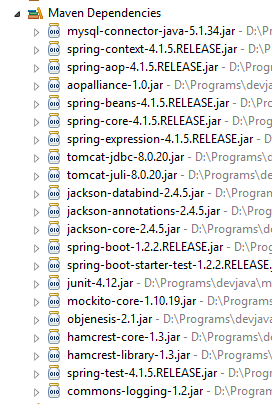 |
我们将生成一个单一的 JAR 文件，其中包含上述所有 JAR 文件中的类以及 [DAO] 层项目中的类。实现方法是修改 [pom.xml] 文件：
<project xmlns="http://maven.apache.org/POM/4.0.0" xmlns:xsi="http://www.w3.org/2001/XMLSchema-instance"
xsi:schemaLocation="http://maven.apache.org/POM/4.0.0 http://maven.apache.org/xsd/maven-4.0.0.xsd">
<modelVersion>4.0.0</modelVersion>
<groupId>istia.st.elections</groupId>
<artifactId>elections-jdbc-01</artifactId>
<version>0.0.1-SNAPSHOT</version>
<parent>
<groupId>org.springframework.boot</groupId>
<artifactId>spring-boot-starter-parent</artifactId>
<version>1.2.2.RELEASE</version>
</parent>
<properties>
<project.build.sourceEncoding>UTF-8</project.build.sourceEncoding>
<java.version>1.8</java.version>
</properties>
<dependencies>
...
</dependencies>
<!-- plugins -->
<build>
<plugins>
<plugin>
<artifactId>maven-assembly-plugin</artifactId>
<configuration>
<archive>
<manifest>
<mainClass>console.Main</mainClass>
</manifest>
</archive>
<descriptorRefs>
<descriptorRef>jar-with-dependencies</descriptorRef>
</descriptorRefs>
</configuration>
</plugin>
</plugins>
</build>
</project>
- 第 25–37 行：配置 Maven 插件以生成 JAR 文件；
- 第 15 行：指定编译时使用的 Java 版本；
完成此修改后，可按以下步骤生成 JAR 文件 [1-10]：
 |
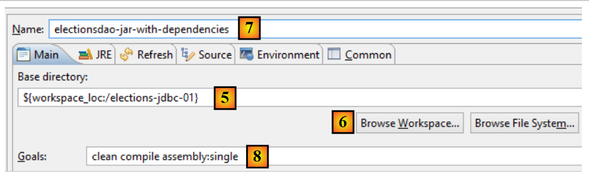 |
- 在 [5] 中，使用按钮 [6] 选择项目文件夹；
- 在 [7] 中，为构建配置命名；
- 在 [8] 中，输入要执行的 Maven 任务列表：
- [clean]：清空项目中的 [target] 文件夹（生成的 JAR 文件将放置在此处）；
- [compile]：编译项目；
- [assembly:single]：生成一个包含项目所有类及其依赖项的单一 JAR 文件；
 |
- 在 [9-10] 中，请确认您安装的是 JDK（Java 开发工具包），而非 JRE（Java 运行时环境）。两者的区别在于 JDK 包含编译器，而 JRE 不包含。如果您没有 JDK，则必须在 [10] 中通过 [11] 添加一个。为此，请按照第 3.1 节中描述的步骤操作；
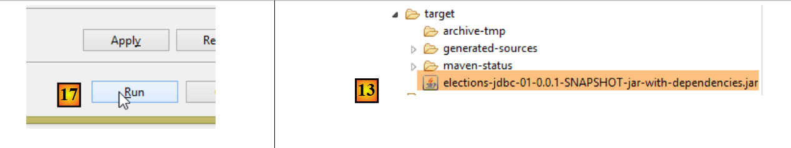 |
- 在 [17] 中，运行构建配置；
- 在 [13] 中，生成的归档文件；
您可以使用解压工具打开此压缩包：
 |
7.12. 测试 [DAO] 层压缩包
让我们创建一个标准的 Eclipse 项目（非 Maven）[1]：
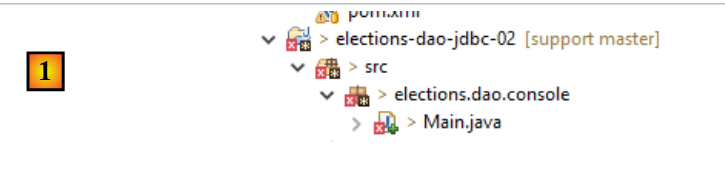 |
我们将 [elections-dao-jdbc-01] 项目中的 [dao.console] 包复制并粘贴到 [elections-dao-jdbc-02] 项目中 [2]。由于 [Main] 类引用了不在其 [Classpath] 中的类，因此出现了若干错误。我们将修改 [Classpath]。
首先，我们在新项目中创建 [2-8] 一个 [lib] 文件夹：
 |
 |
在[9]中，我们将上一步创建的归档文件放入[lib]文件夹，然后修改项目的构建路径：
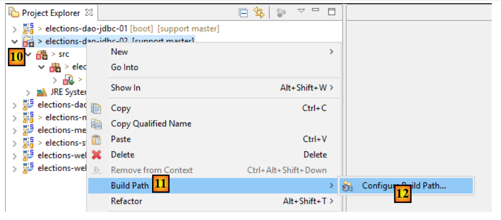 |
 |
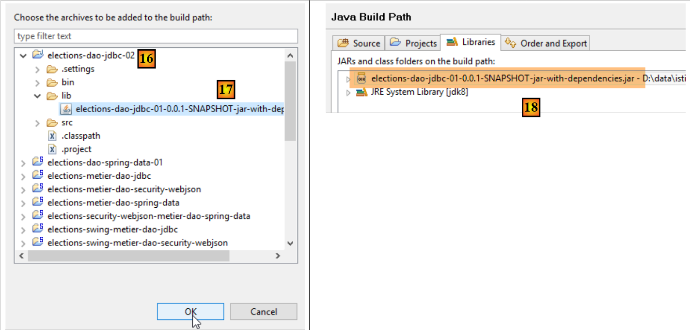 |
- 在[18]中，我们导入了先前创建的[DAO]层的存档；
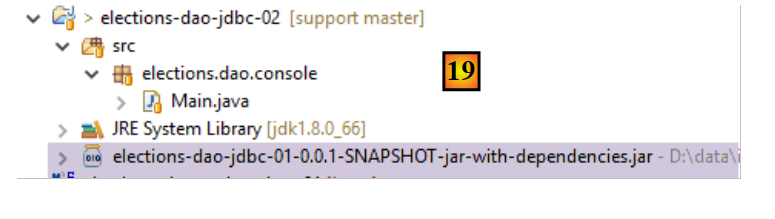 |
- 在 [19] 中，该项目不再显示任何错误；
然后我们可以运行 [Main] 类。结果与之前相同。